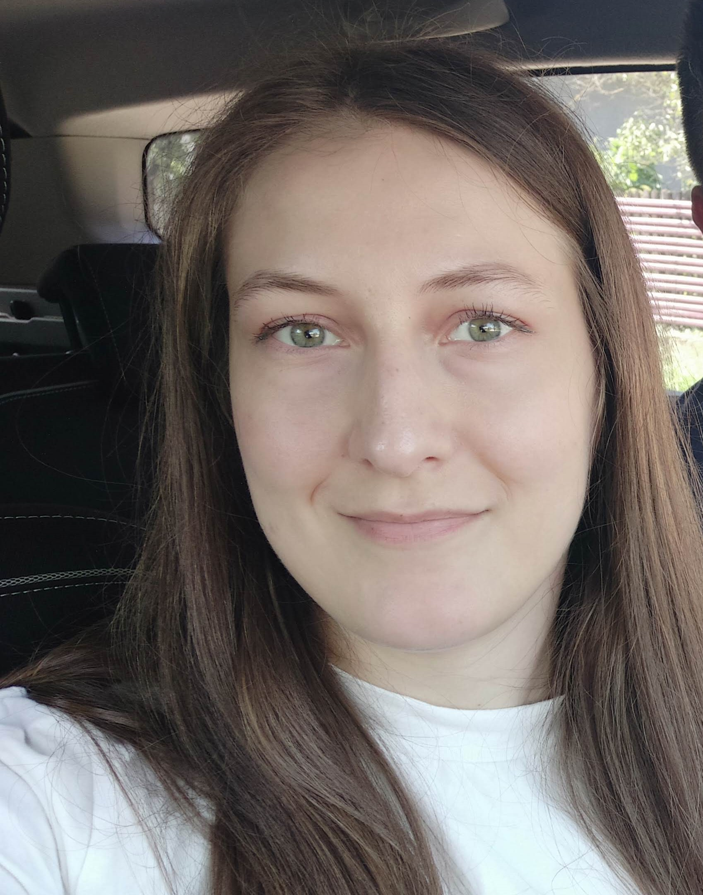

Stefania S.
Web Developer

Summary
I am a begginer in all things web-development. I am currently enrolled in a web-development course on Udemy where I learn about the basisc of web development, including, but not limited to, HTML, CSS, Java, also the principles of software testing, and many more. I am aiming to expand my knowledge on this topic and make my way into the IT field this way.
Education
Formal education
- Bachelor in Nursing, University Transilvania of Brasov (2015-2019)
- Economics, A.P. High School, Targu Secuiesc (2011-2015)
IT courses
Work Experience
Registered Nurse, ICU
Clinical Hospital of Infectious Diseases (February 2020-present)
- organising, delegating, and performing specific tasks required for the care of critically ill patients
- collaborating with all members of the medical team
- drawing up of specific documentation required for patient care, in both physical and digital form
- working with and maintaining all equipment to the standards
Registered Nurse, Dental
C Dental Clinic (October 2019-January 2020)
- assissting the physician with all procedures/surgeries
- maintaining the equipment by cleaning, sterilising up to the standards
- assisting the clients with making appointments
- maintaining the clinic fully stocked with necessary items by making orders
Documentation Officer
Crms Office (June 2018-September 2019)
- managing incoming and outgoing correspondence
- sending and receiving documents/packages to/from clients
- scheduling appointments and meetings
- registering, organising, and archiving documents
Skills
- Personal skills
- Organisational skills
- Attention to detail
- Problem solving
- Communication
- Teamwork
- Patience
- Working under pressure
- Time and resource management
- Professional skills
- Languages: English (Profficient), Romanian (Native), Hungarian (Profficient), German (Basic), Spanish (Basic)
- Microsoft Office
- Computer hardware knowledge
- Computer software knowledge
- Programming languages such as HTML, CSS, Java
Awards and certifications
Others